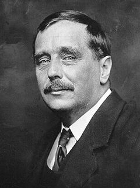

Ге́рберт Джордж Веллс
{kind=link}

Ге́рберт Джордж Веллс (англ. Herbert George Wells); (21 вересня 1866, Бромлі — 13 серпня 1946, Лондон) — англійський письменник, найбільш відомий як письменник-фантаст, хоча має значний доробок праць історичних, на політичну тематику, публіцистики та настільних ігор. Поряд з Мері Шеллі, Едгаром Елланом По та Жулем Верном, вважається одним із засновників сучасної наукової фантастики.
Герберт Джордж Веллс: Пророк, що прийшов із майбутнього
Якщо ви хоча б раз замислювалися про подорожі в часі, вторгнення марсіан або невидимість, ви вже знайомі з творчістю Герберта Веллса. Разом із Жулем Верном його вважають «батьком наукової фантастики», проте Веллс пішов далі: він не просто описував механізми, він досліджував, як технології змінять людську душу та суспільство.Біографія: Від порцелянової крамниці до зірок
Життя Веллса — це класична історія успіху людини, яка зробила себе сама.
Ранні роки та «щаслива» травма
Герберт народився 21 вересня 1866 року в передмісті Лондона. Його батько був професійним гравцем у крикет і власником невеликої крамниці порцеляни, яка ледь трималася на плаву.
Ключовим моментом у житті малого «Берті» став нещасний випадок: у віці 7 років він зламав ногу. Щоб розважити сина, батько приносив йому книги з місцевої бібліотеки. Саме тоді Герберт «захворів» на читання, відкривши для себе світи, набагато цікавіші за брудні вулиці Бромлі.
Освіта та науковий бекграунд
Веллс не мав грошей на елітну освіту, але мав блискучий розум. Він виборов стипендію в Нормальній школі наук у Лондоні, де навчався у самого Томаса Гакслі — видатного біолога та соратника Дарвіна. Це біологічне підґрунтя згодом стане фундаментом його творчості: Веллс завжди дивився на людство як на біологічний вид, що еволюціонує або деградує.
Літературний прорив
Перш ніж стати всесвітньо відомим, Веллс працював учнем торговця тканинами (цей досвід він зненавидів і пізніше описав у романі «Кіппс») та вчителем. Його літературний дебют відбувся у 1895 році з виходом роману «Машина часу». Успіх був миттєвим. Протягом наступних декількох років він видав низку шедеврів, які сьогодні складають «золотий фонд» фантастики.
Філософія та погляди
Веллс був не лише фантастом, а й соціологом, істориком та палким прихильником соціалізму. Він передбачив:
- Виникнення авіації та танків.
- Створення атомної бомби (задовго до її розробки).
- Появу світової інформаційної мережі (прообраз інтернету або «Світового мозку»).
Він був двічі одружений, мав численні романи (зокрема з Марією Закревською-Будберг) і зустрічався з найвпливовішими людьми свого часу — від Сталіна до Рузвельта.
Повна бібліографія творів (Хронологічний список)
Ось перелік ключових художніх творів Веллса. Оскільки він був надзвичайно плідним автором (написав понад 50 романів та сотні оповідань), ми зосередимося на основних книгах.
| Рік | Назва українською | Оригінальна назва (English) | Жанр / Короткий опис |
|---|---|---|---|
| 1895 | Машина часу | The Time Machine | Наукова фантастика (хронофантастика) |
| 1895 | Чудесний візит | The Wonderful Visit | Фентезі, соціальна сатира |
| 1896 | Острів доктора Моро | The Island of Doctor Moreau | Наукова фантастика, філософський роман |
| 1896 | Колеса фортуни | The Wheels of Chance | Соціально-побутовий роман (комедія) |
| 1897 | Невидимець | The Invisible Man | Наукова фантастика, трагедія |
| 1898 | Війна світів | The War of the Worlds | Наукова фантастика (планетарне вторгнення) |
| 1899 | Коли Сплячий прокинеться | When the Sleeper Wakes | Дистопія, наукова фантастика |
| 1900 | Любов та містер Льюішем | Love and Mr Lewisham | Реалістичний роман, драма |
| 1901 | Перші люди на Місяці | The First Men in the Moon | Наукова фантастика (космічна подорож) |
| 1902 | Морська леді | The Sea Lady | Фентезі, сатира |
| 1904 | Їжа богів і як вона прийшла на землю | The Food of the Gods and How It Came to Earth | Наукова фантастика, соціальна алегорія |
| 1905 | Кіппс | Kipps | Соціальний реалізм (виховання) |
| 1905 | Сучасна Утопія | A Modern Utopia | Філософська утопія |
| 1906 | У дні комети | In the Days of the Comet | Наукова фантастика, соціальна утопія |
| 1908 | Війна у повітрі | The War in the Air | Військова фантастика (передбачення авіації) |
| 1909 | Тоно-Бунге | Tono-Bungay | Соціально-побутова сатира |
| 1909 | Енн Вероніка | Ann Veronica | Феміністичний роман, соціальний реалізм |
| 1910 | Історія Містера Поллі | The History of Mr. Polly | Комічний реалістичний роман |
| 1911 | Новий Макіавеллі | The New Machiavelli | Політичний роман |
| 1912 | Шлюб | Marriage | Психологічна драма |
| 1913 | Пристрасні друзі | The Passionate Friends | Мелодрама, соціальний роман |
| 1914 | Дружина сера Ісаака Хармана | The Wife of Sir Isaac Harman | Історія шлюбу без кохання |
| 1914 | Світ звільнений | The World Set Free | Пророча фантастика (передбачення атомної бомби) |
| 1915 | Білбай | Bealby | Історія про пригоду тринадцятирічного хлопчика |
| 1915 | Благодать | Boon | Cатиричний твір, де автор висміює ідею колективної свідомості людства |
| 1915 | Великі шукання / Чудове дослідження | The Research Magnificent | Твір про утопічне бажання жити благородно |
| 1915 | Блепінгтон Блепінгтонський | The Bulpington of Blup | Психологічний роман, сатира |
| 1916 | Проникливість пана Брітлінга | Mr. Britling Sees It Through | Військова драма (Перша світова війна) |
| 1917 | Душа єпископа | The Soul of a Bishop | Історія духовної кризи лорда-єпископа |
| 1918 | Джоан і Пітер | Joan and Peter | Сатиричний портрет Англії, роздуми про цілі освіти |
| 1919 | Незгасимий вогонь | The Undying Fire | Релігійно-філософський роман |
| 1922 | Тайники серця | The Secret Places of the Heart | Психологічний роман, який зосереджується на внутрішньому світі людини, а не на науковій фантастиці. |
| 1923 | Люди як боги | Men Like Gods | Утопія, подорож між паралельними світами |
| 1924 | Сон | The Dream | Наукова фантастика, соціальна драма |
| 1925 | Батько Христини Альберти | Christina Alberta's Father | Історія фемінізму та конфлікту між індивідуальною незалежністю та добровільністю більшої частини суспільства |
| 1926 | Світ Вільяма Кліссолда | The World of William Clissold | Інтелектуально-філософський роман |
| 1927 | В очікуванні (Портрет жінки) | Meanwhile | Складається із двох книг: «Утопограф у саду» та «Адвент». |
| 1928 | Містер Блетсворті на острові Ремполь | Mr. Blettsworthy on Rampole Island | Пригодницький роман, алегорія |
| 1930 | Автократія містера Пархема | The Autocracy of Mr. Parham | Політична сатира, альтернативна історія |
| 1931 | Праця, багатство і щастя людства | The Work, Wealth and Happiness of Mankind | Масштабна соціоекономічна та публіцистична праця Герберта Веллса |
| 1932 | Булпінгтон з Блапа | The Bulpington of Blup | Дослідження характеру, що аналізує психологічні джерела опору веллсіанській ідеології |
| 1933 | Обличчя майбутнього | The Shape of Things to Come | Футурологія, утопія |
| 1937 | Брюнгільда, або Вистава речей | Brynhild, or The Show of Things | Автор досліджує теми публічного іміджу, літературної слави та подружніх непорозумінь |
| 1937 | Зірковий породжений: Біологічна фантазія | Star Begotten: A Biological Fantasia | Наукова фантастика. Іронічне переосмислення або своєрідний ідейний сиквел роману «Війна світів» |
| 1938 | Щодо Долорес (До речі про Долорес) | Apropos of Dolores | Сатиричний та психологічний роман |
| 1939 | Священний терор | The Holy Terror | Політична драма, психологія диктатури |
| 1940 | Діти в Темному лісі | Babes in the Darkling Wood | Погляди на те, як людство може вижити в умовах глобального конфлікту через зміну мислення |
| 1941 | Не можна бути надто обережним | You Can't Be Too Careful | Гостра, часом песимістична соціальна сатира про пересічну людину |
| 1945 | Розум на краю своєї натягнутої вузди | Mind at the End of Its Tether | Автор відходить від свого оптимістичного погляду на науковий прогрес та висловлює песимістичні прогнози про майбутнє людства |
* * *
Цікавий факт: Веллс чотири рази номінувався на Нобелівську премію з літератури, але так її й не отримав. Проте його вплив на масову культуру виявився набагато потужнішим за будь-які нагороди.
Герберт Веллс пішов із життя 13 серпня 1946 року, встигнувши побачити реалізацію багатьох своїх жахливих пророцтв. Він залишив нам застереження: якщо ми не навчимося керувати своїм розумом так само добре, як ми керуємо машинами, наше майбутнє може стати лише черговим розділом у книзі про вимирання видів.
--> Бібліографія Г.Веллса на Вікіпедії <--
Деякі книги Ге́рберта Джорджа Веллса в перекладі українською мовою та англійською (в оригіналі) ви також можете переглянути на таких ресурсах:
- https://chtyvo.org.ua/ (сайт не працює)
- https://www.ukrlib.com.ua/
- https://www.gutenberg.org/ebooks/author/30
- https://standardebooks.org/ebooks/h-g-wells
- https://americanliterature.com/author/hg-wells
- https://www.online-literature.com/wellshg/
- https://standardebooks.org/ebooks/h-g-wells
- https://openlibrary.org/authors/OL13066A/H._G._Wells